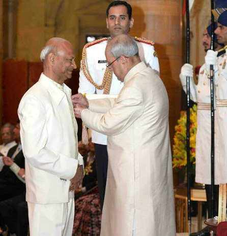

Known as |
Tilak Gitai |
|---|---|
Mother's name |
Late Shri Manfool Devi |
Father's name |
Late Shri Ram Gopal Agrawal |
Birthday |
26th September 1949 |
Place from |
Jaipur, Rajasthan |
Tilak GitaiMaestro painter
Padam Shri by the president of India-2017
|
|
Born in 1949 Tilak Gitai hails from the second generation of royal court painter
patronized by the rulers of Bikaner.He has done his B.F.A from the collage of art / University of Delhi in the year 1974.
He specializes in Indian traditional Miniature paintings like
Mughal,Rajasthani and Phadi paintings etc.
He is also an all round Master Craftsman.
|
 |
|
He has done a great research and works on the acient"Ragmala"paintings
and added with his own imagination and creativity the missing portions to these paintings
without which, in essence, these paintings were incomplete. His one set of ragmala paintings
on Ivory is displayed at Muse'ed'enthnographie-Geneva.
|
He makes paintings on different surfaces like old handmade paper, fine silk and wall Murals etc. and also restores the old miniature paintings. He makes his own colors from precious, semi-precious stones, minerals and herbs. Real gold and silver colors are made from gold and silver leaf. He also makes his own brushes. He even trained many students the art and techniques of Indian Miniature Painting around the globe. |
|
During his illustrations carrer he got many prizes and awards for his originality and artistic brilliance like:
|